Kapitel 4 Explorativ dataanalys
4.1 Vad är Explorativ Dataanalys?
En kreativ iterativ process där man ställer frågor/gör hypoteser om sin data och sedan utforskar dem
Mera konkret kan det beskrivas som
- Formulera en hypotes
- Transformera din data - om nödvändigt
- Visualisera din data (vårt fokus idag)
- Modellera - om nödvändigt
- Formulera nya hypoteser
Mindset inte formel!
4.1.1 Exempel på basala frågor/hypoteser
Frågeställningar kan vara vaga!
Vad för data innehåller de olika kolonnerna?
Hur ser Datans kvalitét ut? e.g missing values, felaktiga tabellvärden, duplicerade värden
Finns det outliers?
Medelvärde, spridning
4.1.2 Hur gör man i R?
R har basfunktionalitet som kan användas för att snabbt få en numerisk överblick datan t.ex
summary() och head()
summary(iris)## Sepal.Length Sepal.Width Petal.Length Petal.Width
## Min. :4.300 Min. :2.000 Min. :1.000 Min. :0.100
## 1st Qu.:5.100 1st Qu.:2.800 1st Qu.:1.600 1st Qu.:0.300
## Median :5.800 Median :3.000 Median :4.350 Median :1.300
## Mean :5.843 Mean :3.057 Mean :3.758 Mean :1.199
## 3rd Qu.:6.400 3rd Qu.:3.300 3rd Qu.:5.100 3rd Qu.:1.800
## Max. :7.900 Max. :4.400 Max. :6.900 Max. :2.500
## Species
## setosa :50
## versicolor:50
## virginica :50
##
##
## head(iris)## Sepal.Length Sepal.Width Petal.Length Petal.Width Species
## 1 5.1 3.5 1.4 0.2 setosa
## 2 4.9 3.0 1.4 0.2 setosa
## 3 4.7 3.2 1.3 0.2 setosa
## 4 4.6 3.1 1.5 0.2 setosa
## 5 5.0 3.6 1.4 0.2 setosa
## 6 5.4 3.9 1.7 0.4 setosa4.1.3 Hur gör man i R?
R har även mer avancerade verktyg:
- dlookr, ta fram rapport för datakvalitét
skimr, snabb explorativ analys (som vi kommer använda idag)
skim(iris)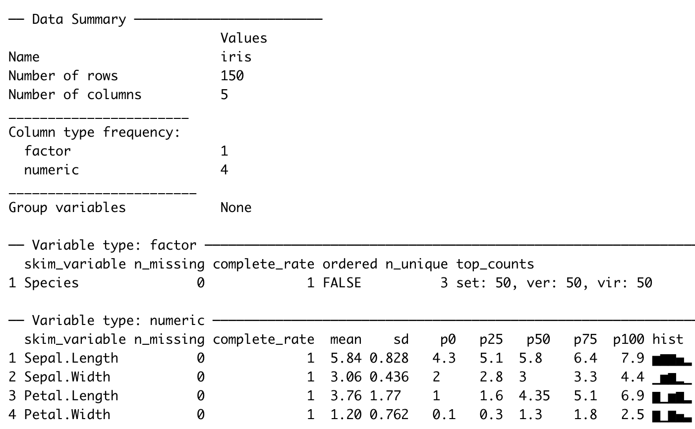
4.2 Datavisualisering
Grunden i explorativ dataanalys
Visualisering är grundläggande för att människor ska kunna få en överblick av data
4.2.1 Varför visualisera?
Anscombe quartet - Dataset skapat av Francis Anscombe 1973
## observation set x y
## 1 1 I 10 8.04
## 2 1 II 10 9.14
## 3 1 III 10 7.46
## 4 1 IV 8 6.58
## 5 2 I 8 6.95
## 6 2 II 8 8.14
## 7 2 III 8 6.77
## 8 2 IV 8 5.76
## 9 3 I 13 7.58
## 10 3 II 13 8.744.2.2 Vad är det första vi gör?
## # A tibble: 4 x 5
## set x_mean y_mean x_sd y_sd
## <chr> <dbl> <dbl> <dbl> <dbl>
## 1 I 9 7.50 3.32 2.03
## 2 II 9 7.50 3.32 2.03
## 3 III 9 7.5 3.32 2.03
## 4 IV 9 7.50 3.32 2.03Ser bra ut!
4.2.3 Steg 2: anpassar en linjär modell
anscombe_tidy %>%
nest(observation, x, y) %>%
mutate(model = map(data, ~lm(y ~ x, data = .x)),
tidy = map(model, broom::tidy)) %>%
unnest(tidy) %>%
filter(term == "x") %>%
select(set, estimate, std.error, statistic)## Warning: All elements of `...` must be named.
## Did you want `data = c(observation, x, y)`?## # A tibble: 4 x 4
## set estimate std.error statistic
## <chr> <dbl> <dbl> <dbl>
## 1 I 0.500 0.118 4.24
## 2 II 0.5 0.118 4.24
## 3 III 0.500 0.118 4.24
## 4 IV 0.500 0.118 4.24Ser inte ut som att det är någon skillnad mellan grupperna
Men…
## `geom_smooth()` using formula 'y ~ x'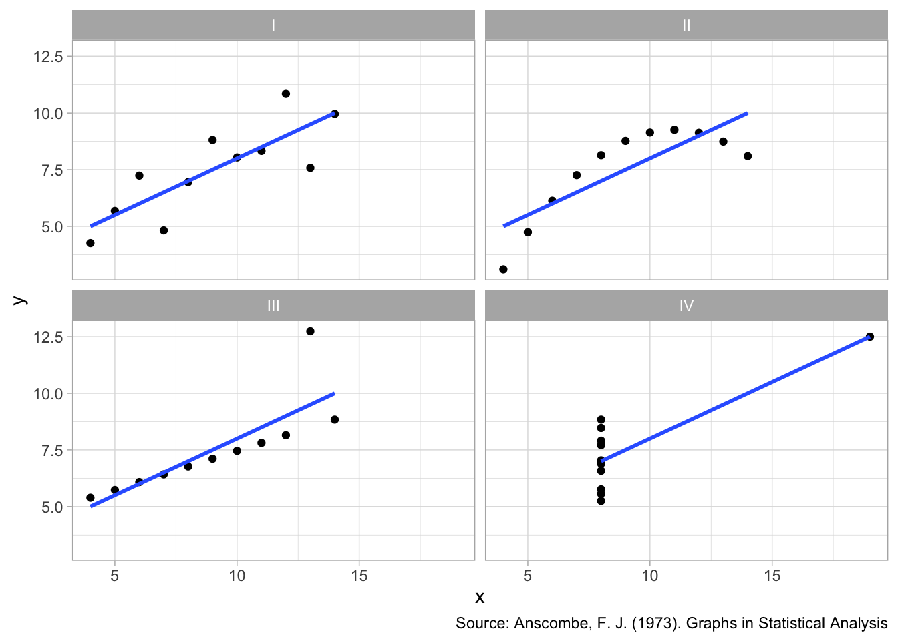
Statistiska mått kan gömma mycket av sanningen!
4.3 Datasaurus Dozen
Modern variant av Anscombe - skapat av Alberto Cairo
library(datasauRus)
datasaurus_dozen %>%
group_by(dataset) %>%
summarise(x_mean = mean(x), y_mean = mean(y),
x_sd = sd(x), y_sd = sd(y),
corr = cor(x,y)) ## `summarise()` ungrouping output (override with `.groups` argument)## # A tibble: 13 x 6
## dataset x_mean y_mean x_sd y_sd corr
## <chr> <dbl> <dbl> <dbl> <dbl> <dbl>
## 1 away 54.3 47.8 16.8 26.9 -0.0641
## 2 bullseye 54.3 47.8 16.8 26.9 -0.0686
## 3 circle 54.3 47.8 16.8 26.9 -0.0683
## 4 dino 54.3 47.8 16.8 26.9 -0.0645
## 5 dots 54.3 47.8 16.8 26.9 -0.0603
## 6 h_lines 54.3 47.8 16.8 26.9 -0.0617
## 7 high_lines 54.3 47.8 16.8 26.9 -0.0685
## 8 slant_down 54.3 47.8 16.8 26.9 -0.0690
## 9 slant_up 54.3 47.8 16.8 26.9 -0.0686
## 10 star 54.3 47.8 16.8 26.9 -0.0630
## 11 v_lines 54.3 47.8 16.8 26.9 -0.0694
## 12 wide_lines 54.3 47.8 16.8 26.9 -0.0666
## 13 x_shape 54.3 47.8 16.8 26.9 -0.0656Datasaurus Dozen
ggplot(datasaurus_dozen, aes(x=x, y=y))+
geom_point()+
theme_minimal() +
facet_wrap(~dataset)
Eller som animering:
library(datasauRus)
library(ggplot2)
library(gganimate)
ggplot(datasaurus_dozen, aes(x=x, y=y))+
geom_point()+
theme_minimal() +
transition_states(dataset, 3, 1) +
ease_aes('cubic-in-out')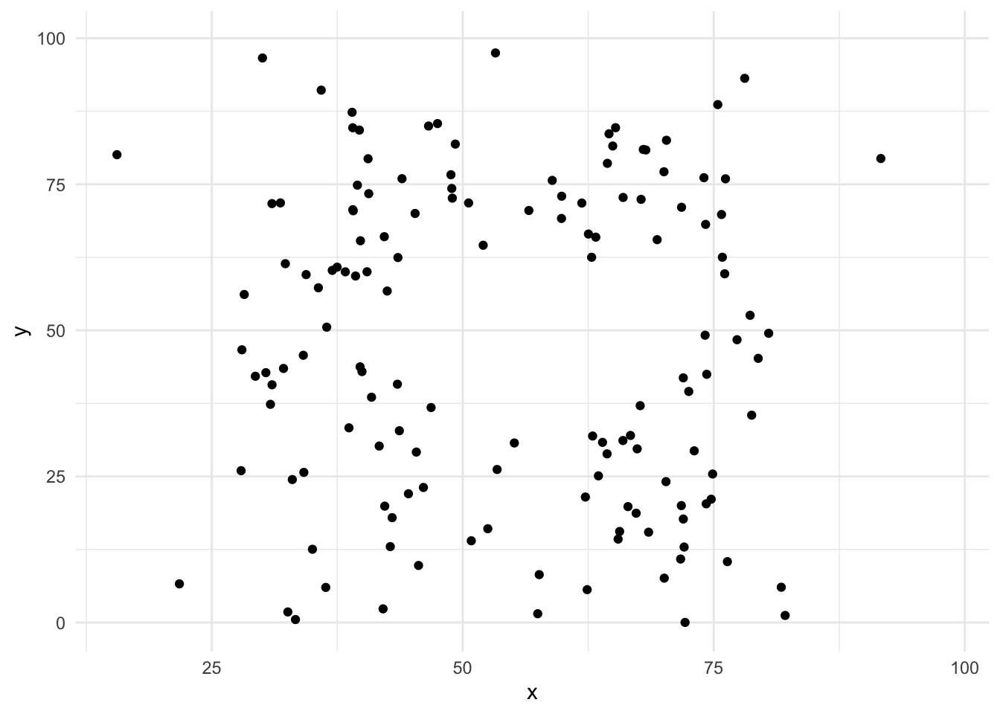
4.4 Workflow för nytt dataset
Börja alltid med visualisering, särskilt om du ska göra modellering
explorativ visualisering är en iterativ process
Börjar övergripande sedan mera specialiserade beroende på hur dina hypoteser/frågor utvecklas
Gör alltid explorativ analys med ett programmeringsspråk
Det gör att din analys finns dokumenterad
Du kan dela med den till andra
Den är reproducerbar och kan granskas
Saker du bör undvika: BI-verktyg för explorativ analys och Excel.
4.5 Gapminder
Vi har fått ett dataset
gapminderoch egentligen inga andra uppgifter och vi vill förstå detVi börjar med att snabbt kolla på datan med
head()
library(gapminder)
head(gapminder)## # A tibble: 6 x 6
## country continent year lifeExp pop gdpPercap
## <fct> <fct> <int> <dbl> <int> <dbl>
## 1 Afghanistan Asia 1952 28.8 8425333 779.
## 2 Afghanistan Asia 1957 30.3 9240934 821.
## 3 Afghanistan Asia 1962 32.0 10267083 853.
## 4 Afghanistan Asia 1967 34.0 11537966 836.
## 5 Afghanistan Asia 1972 36.1 13079460 740.
## 6 Afghanistan Asia 1977 38.4 14880372 786.- Undersöker med hjälp av
summary()/skim()
summary(gapminder)## country continent year lifeExp
## Afghanistan: 12 Africa :624 Min. :1952 Min. :23.60
## Albania : 12 Americas:300 1st Qu.:1966 1st Qu.:48.20
## Algeria : 12 Asia :396 Median :1980 Median :60.71
## Angola : 12 Europe :360 Mean :1980 Mean :59.47
## Argentina : 12 Oceania : 24 3rd Qu.:1993 3rd Qu.:70.85
## Australia : 12 Max. :2007 Max. :82.60
## (Other) :1632
## pop gdpPercap
## Min. :6.001e+04 Min. : 241.2
## 1st Qu.:2.794e+06 1st Qu.: 1202.1
## Median :7.024e+06 Median : 3531.8
## Mean :2.960e+07 Mean : 7215.3
## 3rd Qu.:1.959e+07 3rd Qu.: 9325.5
## Max. :1.319e+09 Max. :113523.1
## library(skimr)
skim(gapminder)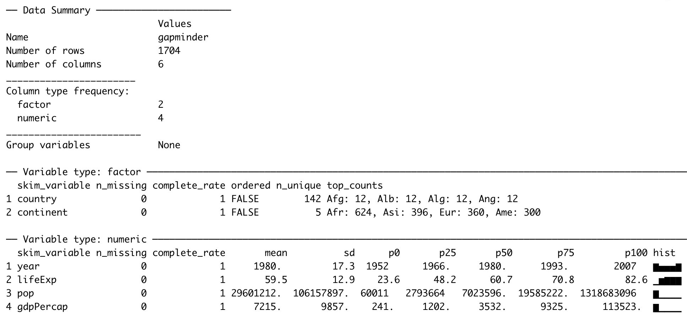
4.5.1 Datapunkter per land?
gapminder %>% filter(country == "Sweden") %>% arrange(year)## # A tibble: 12 x 6
## country continent year lifeExp pop gdpPercap
## <fct> <fct> <int> <dbl> <int> <dbl>
## 1 Sweden Europe 1952 71.9 7124673 8528.
## 2 Sweden Europe 1957 72.5 7363802 9912.
## 3 Sweden Europe 1962 73.4 7561588 12329.
## 4 Sweden Europe 1967 74.2 7867931 15258.
## 5 Sweden Europe 1972 74.7 8122293 17832.
## 6 Sweden Europe 1977 75.4 8251648 18856.
## 7 Sweden Europe 1982 76.4 8325260 20667.
## 8 Sweden Europe 1987 77.2 8421403 23587.
## 9 Sweden Europe 1992 78.2 8718867 23880.
## 10 Sweden Europe 1997 79.4 8897619 25267.
## 11 Sweden Europe 2002 80.0 8954175 29342.
## 12 Sweden Europe 2007 80.9 9031088 33860.4.5.1.1 Naturlig fråga: Hur påverkar ekonomisk utveckling den förväntande livslängden i ett land?
För att undersöka den här frågan så vill vi göra en visualisering med hjälp av ggplot2
Då behöver vi först
4.6 Grammar of grahics
4.6.1 1. Data
För att minska mängden data kollar vi bara på ett år
data <- gapminder %>%
filter(year == 1972)
ggplot(data)
4.6.2 2. Aesthetics
Vi behöver
mappadata till visualiseringen. Vi mappar data tillaestethicsi visualiseringen. Enaesthetickan vara exempelvisx-axeln ellery-axeln.För att svara på vår fråga kan vi exempelvis mappa
gdpPercaptillx-axeln ochlifeExptilly-axeln
ggplot(data = data, aes(x = gdpPercap, y = lifeExp))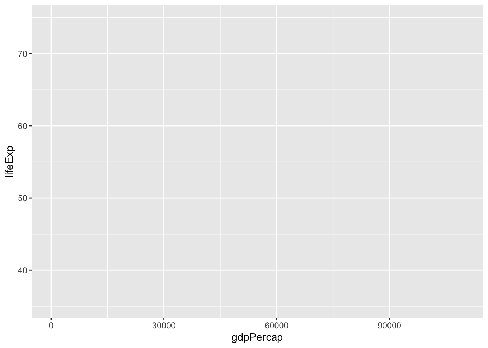
4.6.3 3. Geometriska objekt
Vi behöver geometriska objekt som representerar data, exempelvis punkter, linjer eller staplar.
I ggplot2 kallas dessa för geoms, exempelvis:
geom_point(): punkter,
geom_line(): linjer,
geom_bar(): staplar
ggplot(data = data, aes(x = gdpPercap, y = lifeExp)) +
geom_point()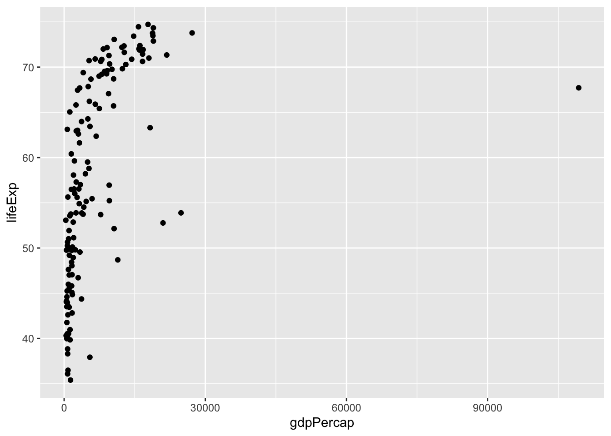
Det verkar finnas ett samband, kan vi förstå mera?
Mer aesthetics
p <- ggplot(data = data,
aes(x = gdpPercap,
y = lifeExp,
color = continent)) +
geom_point()
4.6.3.1 Storlek ~ invånare
ännu mer aesthetics
ggplot(data = data,
aes(x = gdpPercap,
y = lifeExp,
color = continent,
size = pop)) +
geom_point()
4.6.4 4. Skala
Vilken skala ska axlarna i grafen ha?
ggplot(data = data, aes(x = gdpPercap, y = lifeExp,
size = pop, color = continent)) +
geom_point() +
scale_y_continuous() + ## Default value
scale_x_continuous() 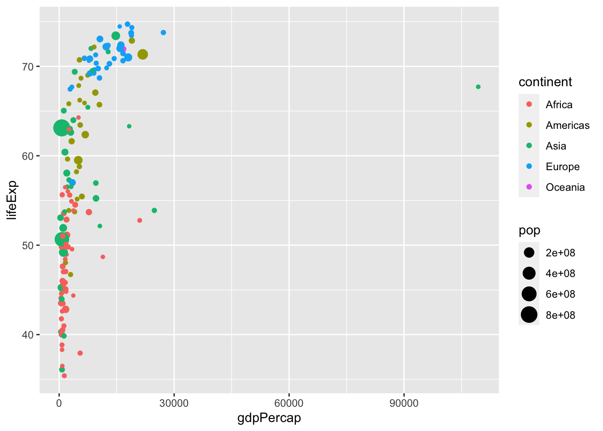
4.6.5 GDP per capita är skevt fördelad
Vanligt i variabler som motsvarar pengar
ggplot(data, aes(x = gdpPercap)) +
geom_density()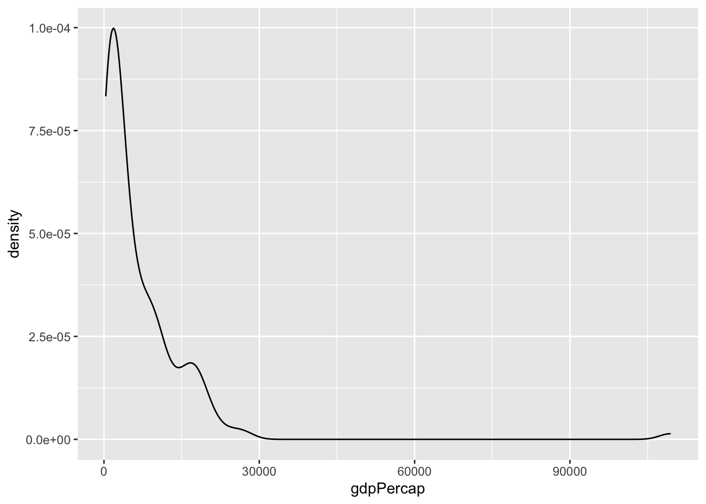
4.6.5.1 Logaritmisk skala
Genom att ta logaritmen kan vi justera för den skeva fördelningen
ggplot(data, aes(x = gdpPercap)) +
geom_density() +
scale_x_log10() ##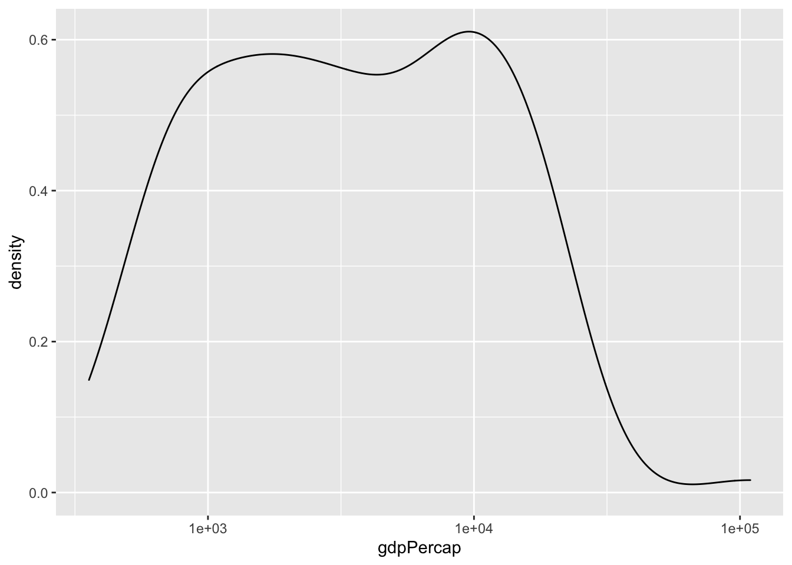
ggplot(data = data, aes(x = gdpPercap,
y = lifeExp,
size = pop,
color = continent)) +
geom_point() +
scale_x_log10() 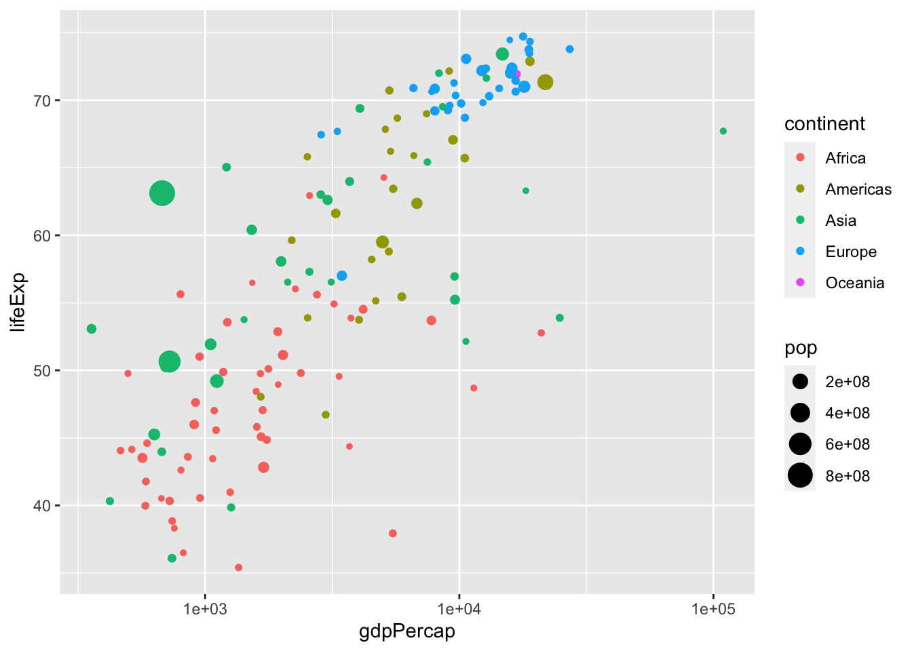
##<4 Hans Roslings berömda visualisering
library(gganimate)
library(gapminder)
ggplot(gapminder, aes(gdpPercap, lifeExp, size = pop, colour = continent)) +
geom_point(alpha = 0.7) +
#scale_colour_manual(values = country_colors) +
scale_size(range = c(2, 12)) +
scale_x_log10() +
guides(color= guide_legend(), size=FALSE) +
theme_light() +
labs(title = 'Year: {frame_time}',
x = 'GDP per capita',
y = 'life expectancy') +
transition_time(year) +
ease_aes('linear')
4.6.6 5. Statistiska beräkningar
För att kvantifiera sammanbandet mera kan vi också lägga till statistiska beräkningar till grafen
ggplot(data = data, aes(x = gdpPercap,
y = lifeExp,
size = pop,
color = continent)) +
geom_point() +
scale_x_log10() +
stat_smooth(method = "lm")## `geom_smooth()` using formula 'y ~ x'## Warning in qt((1 - level)/2, df): NaNs produced## Warning in max(ids, na.rm = TRUE): no non-missing arguments to max; returning -
## Inf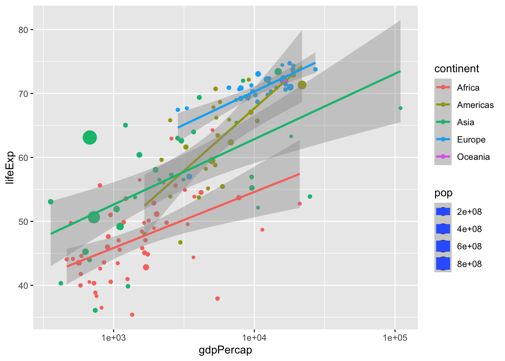
Nu beräknas statistik per grupp. Det är eftersom att vi specificerat i vår
aes()iggplot().Vi kan flytta
aes()till våra geometriska objekt om vi vill beräkna statistik för hela gruppen.
ggplot(data = data, aes(x = gdpPercap, y = lifeExp)) +
geom_point(aes(size = pop, color = continent)) +
scale_x_log10() +
stat_smooth(method = "lm")## `geom_smooth()` using formula 'y ~ x'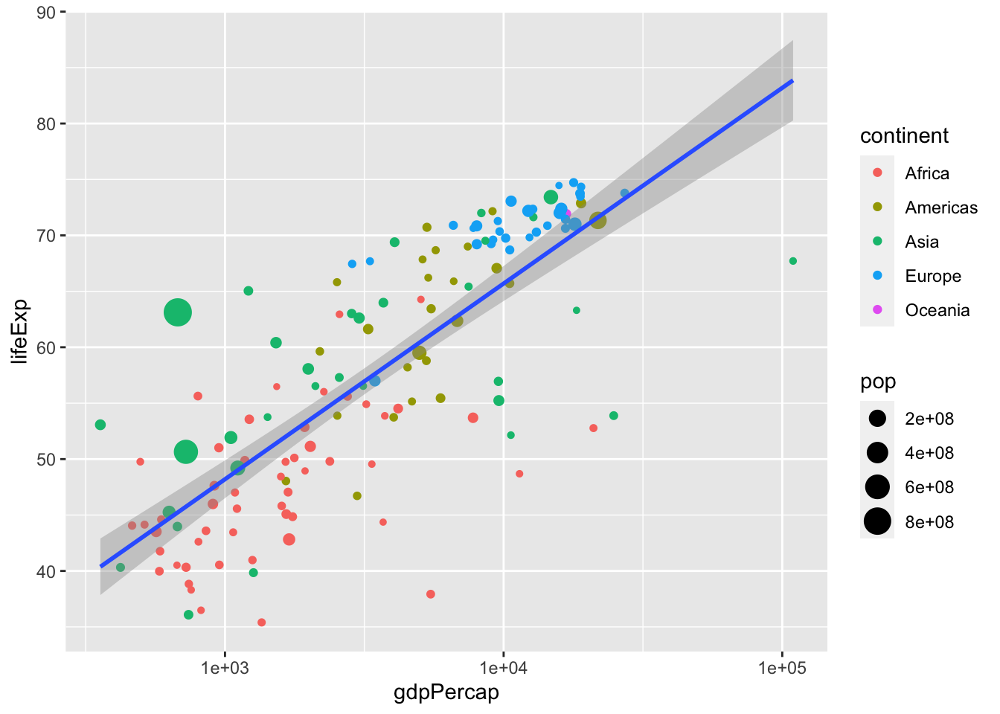
4.6.7 6. Facets
Vi kan också dela upp grafen i flera visualiseringar
ggplot(data = data, aes(x = gdpPercap,
y = lifeExp,
size = pop,
color = continent)) +
geom_point() +
scale_x_log10() +
stat_smooth(method = "lm") +
facet_wrap(~continent)## `geom_smooth()` using formula 'y ~ x'## Warning in qt((1 - level)/2, df): NaNs produced## Warning in max(ids, na.rm = TRUE): no non-missing arguments to max; returning -
## Inf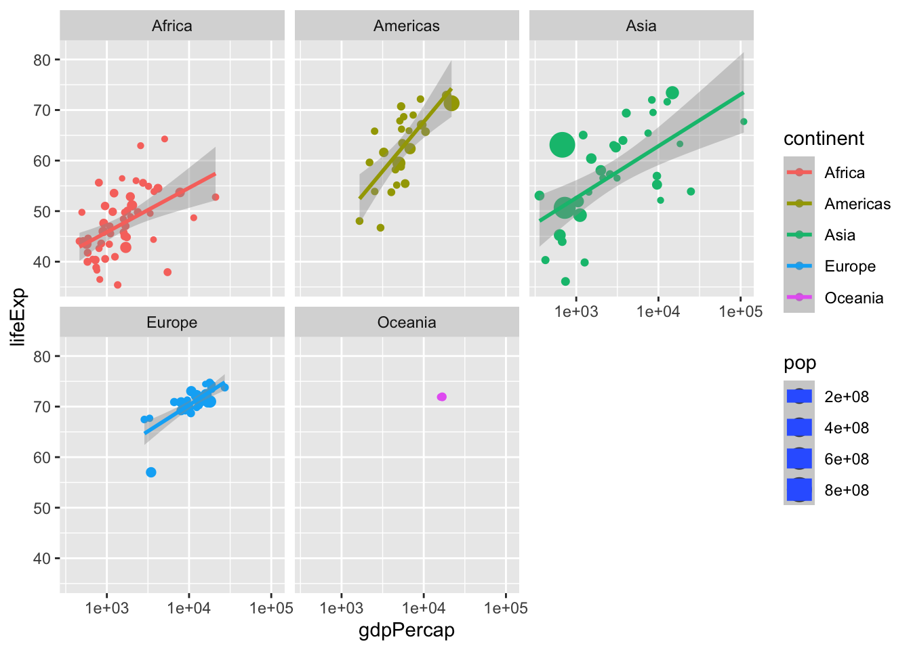
Vi kan också specificera skalorna för varje subplot
ggplot(data = data, aes(x = gdpPercap,
y = lifeExp,
size = pop,
color = continent)) +
geom_point() +
scale_x_log10() +
stat_smooth(method = "lm") +
facet_wrap(~continent, scales = "free")## `geom_smooth()` using formula 'y ~ x'## Warning in qt((1 - level)/2, df): NaNs produced## Warning in max(ids, na.rm = TRUE): no non-missing arguments to max; returning -
## Inf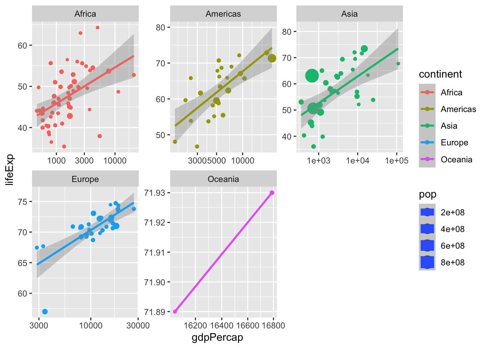
4.6.8 7. Koordinatsystem
- Ett sista lager vi skulle kunna använda för att ändra vår graf
- Exempelvis Kartesiskt eller Polärt
- Polärt för exempelvis cirkeldiagram

4.6.9 Grammar of graphics
R Paketet som har använts heter ggplot2 och det bygger på en variant av The Grammar of Graphics och består av de 7 beståndsdelar vi precis gått igenom
.footnote[ Wickham, H (2010), “A layered Grammar of Graphics”, Journal of Computational and Graphical Statistics, vol. 19, no. 1, pp. 3–28,]
Data
Aesthetics
Geometric Objects
Scale
Statistics
Facets
Coordinate systems
(8.) Labels, titlar, legends
Som kan manipuleras för att skapa de visualiseringar vi vill ha
4.7 Gapminder - fortsättning
Vi såg att det fanns en outlier i gdpPercap per lifeExp
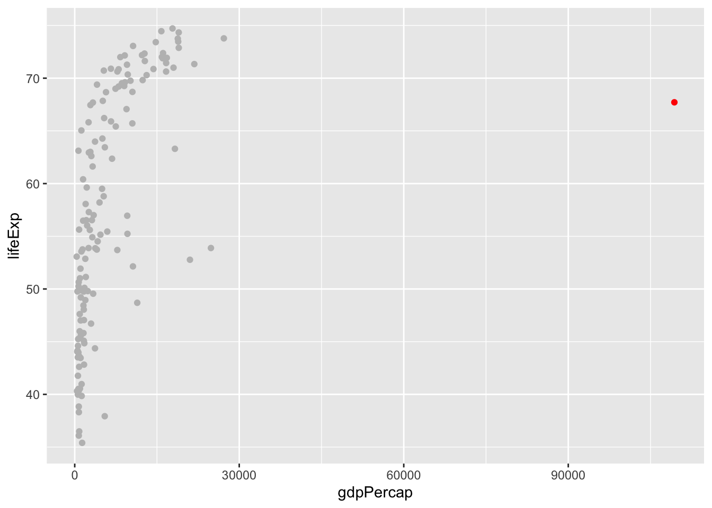
Vilket land är det?
data %>% arrange(desc(gdpPercap))## # A tibble: 142 x 6
## country continent year lifeExp pop gdpPercap
## <fct> <fct> <int> <dbl> <int> <dbl>
## 1 Kuwait Asia 1972 67.7 841934 109348.
## 2 Switzerland Europe 1972 73.8 6401400 27195.
## 3 Saudi Arabia Asia 1972 53.9 6472756 24837.
## 4 United States Americas 1972 71.3 209896000 21806.
## 5 Libya Africa 1972 52.8 2183877 21011.
## 6 Canada Americas 1972 72.9 22284500 18971.
## 7 Norway Europe 1972 74.3 3933004 18965.
## 8 Denmark Europe 1972 73.5 4991596 18866.
## 9 Netherlands Europe 1972 73.8 13329874 18795.
## 10 Bahrain Asia 1972 63.3 230800 18269.
## # … with 132 more rowsÄr det en utveckling som håller i sig?
kuwait_data <- gapminder %>%
filter(country == "Kuwait")
kuwait_data %>%
ggplot(aes(x=year, y=gdpPercap)) +
geom_line(color='red') + scale_color_identity()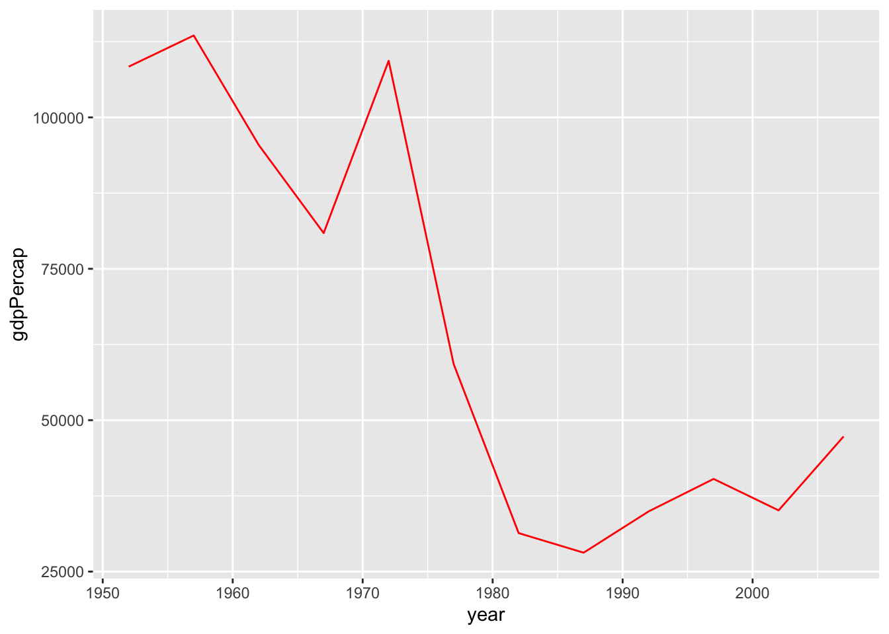
I jämförelse med utveckingen i resten av toppländerna 1972?
top_countries <- data %>% top_n(11, gdpPercap) %>%
filter( country!= 'Kuwait') %>%
pull(country)
top_countries## [1] Bahrain Canada Denmark Germany Libya
## [6] Netherlands Norway Saudi Arabia Switzerland United States
## 142 Levels: Afghanistan Albania Algeria Angola Argentina Australia ... Zimbabwetop_mean <- gapminder %>%
filter(country %in% top_countries) %>%
group_by(year) %>%
summarise(gdp_mean = mean(gdpPercap))## `summarise()` ungrouping output (override with `.groups` argument)top_mean## # A tibble: 12 x 2
## year gdp_mean
## <int> <dbl>
## 1 1952 9468.
## 2 1957 11271.
## 3 1962 13393.
## 4 1967 17146.
## 5 1972 20673.
## 6 1977 23406.
## 7 1982 23799.
## 8 1987 24323.
## 9 1992 25740.
## 10 1997 27633.
## 11 2002 29947.
## 12 2007 33389.data_added_mean <- kuwait_data %>% add_column(
"mean" = top_mean$gdp_mean)
data_added_mean %>%
ggplot(aes(x = year)) +
geom_line(aes(y = gdpPercap), color = 'red') +
geom_line(aes(y = mean), color = 'gray') +
scale_color_identity()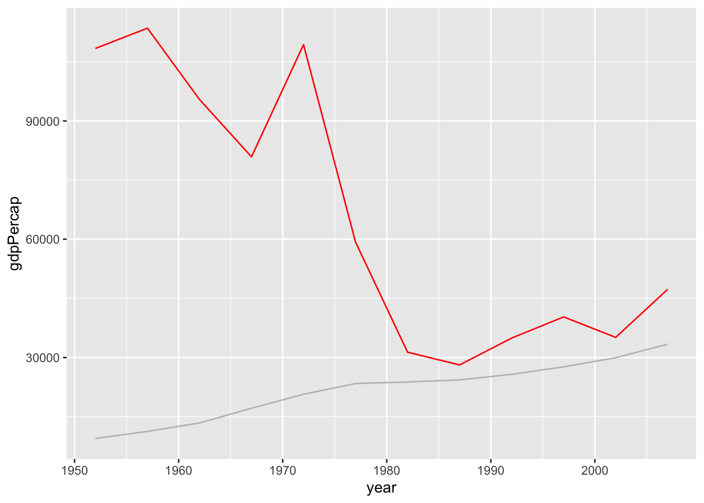
4.8 EDA är en nyfiken process utan slut!
Det finns i princip alltid mera saker man skulle kunna undersöka som:
Hur ser utvecklingen ut om vi istället för att undersöka BNP per kapita, undersöker totala BNP per land?
Om vi utesluter Kuwait som en outlier 1972?
Om vi inför en annan gruppering?
etc..
4.8.1 Det ni ska ta med er idag är inte de specifika sakerna vi har undersökt, utan ett mindset!
4.9 Länkar till resurser
R for Data Science - fantastisk bok som har bra material om alling Data Science
Visual Vocabulary - Financial Times referensmaterial för visualiseringar
ggplot2 - dokumentation för ggplot2
kaggle - Hemsida med AI/ML tävlingar och källa till gratis dataset
stack overflow - Forum för programmeringsfrågor, där svar på nästan alla problem man stöter på finns